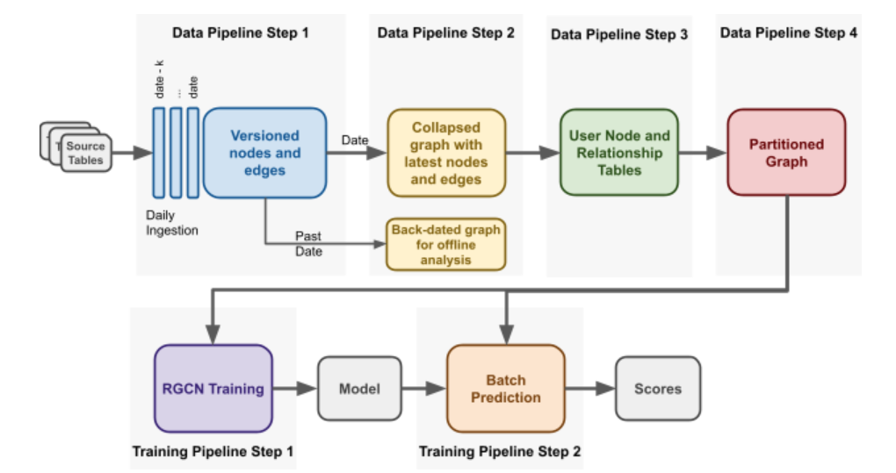

How Uber Used GNNs to Detect Fraud
Fraud and ML
Fraud remains a persistent concern in various industries within the digital realm. Because fraud can take the shape of many different types depending on the industry, it becomes one of the most complex use-cases of machine learning. Healthcare fraud, for instance, involves doctors colluding with testing centers to assign more tests that they should (among other types). Financial fraud is another quagmire that keeps constantly evolving.
Uber, considering the volumes of financial transactions, attracts its fair share of fraudsters and hence they have built advanced fraud detection infrastructure. In this blog post, we’ll look at one of the experiments they did with Graph Neural Networks, outline in this Uber blog. Yes, this is a blog post about a blog post.
Fraud at Uber
What kind of fraud happens at Uber? There are roughly two types, according another post on Uber.
Following are the 2 primary payment fraud types:
- DNS stands for “do not settle”, which occurs when the order has been fulfilled or a trip has been completed, but the payment could not be collected
- Chargeback happens when the payment has been collected, but the user disputes the transaction, and the bank refunds the money
The blog post we are discussing primarily deals with chargebacks, however it does not provide details on its mechanisms. The authors claim that “collusion” among fraud users is what they are targeting, and also make the claim that fraudulent users are connected and clustered (although they offer no explanation or evidence of the same).
Labeling a Fraud
Data scientists often have ready-made labels for them to train data on, if not they are easily extractable using some rules. In fraud, however, using simple rules to flag fraud is not feasible. It almost always needs domain experts to distinguish fraudulent activity from normal. Finding fraudulent transactions to flag is a full-time job with judgement calls.
Risk analysts, for this reason, are an integral part of the risk infrastructure even with all the fancy ML algorithms. While models can catch previously seen fraud patterns, they can struggle to catch new/improved fraud patterns. Hence, a combination of rules-based and model-based approach are usually used.
However, the current blog post is only concerned about the model-based section, and for labelling, it uses the simple flag of a chargeback in a given time range. The authors train a graph neural network to output risk scores for each user, and this score itself is fed into another larger model as a feature for fraud detection (Uber has many models, rules, checkpoints to detect fraud).
What Are Graph Neural Networks
GNNs are a type of architecture that is able to model non-euclidean data, or networked data. Think of a social media graph- where each person has their own features (age, likes) and they also have links to other users (friends, following). Using a GNN, we can model user behavior using their own features as well the features of their linked users (network).
We construct a graph made of nodes and edges. Each node is an entity of our interest, like a user. Each node will have their features (age, likes, etc.). For one node, we will use their own features plus the aggregated features of their neighbors to compute a new representation (embedding) using neural networks. This is one layer of a GNN. We can repeat the process for more layers.
The final representation (embedding) of each node, now incorporates in itself the community information of that node as well as its own information. This embedding can hence be used for downstream tasks to classify the user (into fraud vs non-fraud, or friend suggestions)
The blog post we discuss uses the RGCN architecture, which is a modification to allow different types of nodes in a single graph.
Data and Evaluation
A single graph is constructed in-memory using drivers and riders. The label of fraud is whether a user has chargeback in a time range. The model outputs two scores (why?): rider risk score, and driver risk score.
The model was trained on 4 months of data upto a specific date, and tested on the following 6 weeks. Now, they added the two risk scores to the primary production model (which I’m assuming to be a tree-based one), which gave them a precision boost of 15% with “minimal increase in false positives”. In the feature importance list, the two fraud scores were ranked 4th and 39th among 2000 features.
Data Pipeline
When it comes to industrial applications of interesting algorithms, the most interesting part is not the algorithms per se but the data munging and the infrastructure build that is needed to put all the pieces in place. In the case of Graph Neural Networks, understanding the basic theory behind them is one thing, it is entirely different challenge to deploy them in production. Because GNNs work on networked data, and the data at companies is mostly stored in tabular format, it is a challenge to work them in this relational database paradigm. And this isn’t even the major infrastructural challenge.
The current application involves building a massive single graph containing riders and drivers, and their features and edges. This graph will certainly grow too big to fit in a single computer. How do you do distributed computing on a graph? For massive data that is tabular in nature, there exists solutions like Spark which are standard everywhere. How do you work around on a networked data that is massive? Let’s look at what Uber did.
First step that they have is to create user tables and relationship tables from their existing data. The user table contains the features for each user, and relationship tables would contain the edges between users.
Graph Partitioning
To deal with the issues arising from an extremely large graph, the team partitions the graph into n sub-graphs. They use Cypher query language for dealing with graphs, and the team augmented the language by adding a partition clause.
Among the recent users of Uber, they’ll pick some random n users as seed. For each user, they’ll compute the x-hop subgraph of that user, and will assign that to that partition. Hence, they will have n sub-graphs that can fit on n machines.
However, this also means that some users can be present on more than one sub-graph, and some users (especially the dormant ones) won’t be present in any sub-graph at all. It’s worth pondering if this scheme is losing important information from the users who are not active. The post does not mention what proportion of the original graph is completely untouched by training.

Future Directions
As the team itself comments, using better architectures than RGCN would be a low hanging fruit. There are architectures and libraries like DGL who now support distributed training and inference on massive graphs. Leveraging them would be a no-brainer, if one is to continue working in this direction.
Fraud is one of the more complex domains of data science, where there is no one-size-fits-all unlike say transformers in NLP. Hence, it may indeed yield dividends in sticking with GNNs. However the networked paradigm is somewhat different from your usual ML or Deep Learning training flows, hence it remains a steep learning curve.
Uber Risk Models
This model, according to the authors, was not deployed to production, despite yielding 15% better metrics. The reason was not mentioned. If one is to speculate, perhaps the data may not be comprehensive and the results not significant enough to warrant an addition of extra infrastructural complexity. Storing massive graphs and the distributed learning associated with them require more resources and a very distinct infrastructure that will cost to maintain.
So what does tools does Uber actually use for risk? They have wrote about something interesting called Project RADAR, a human-in-the-loop system that combines machine learning models with actual risk experts to catch early fraud. This system is able to capture new and evolved fraud patterns as well.
Conclusion
We have seen an example of using Graph Neural Networks for fraud detection in an actual industrial setting. Even though the particular model did not get deployed to production, there’s still lot that one could learn from this exercise, and who knows, it may work out better for some other domain.